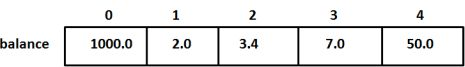

C教程
C教程C数组
C 语言支持数组数据结构，它可以存储一个固定大小的相同类型元素的顺序集合。数组是用来存储一系列数据，但它往往被认为是一系列相同类型的变量。
数组的声明并不是声明一个个单独的变量，比如 number0、number1、...、number99，而是声明一个数组变量，比如 numbers，然后使用 numbers[0]、numbers[1]、...、numbers[99] 来代表一个个单独的变量。数组中的特定元素可以通过索引访问。
所有的数组都是由连续的内存位置组成。最低的地址对应第一个元素，最高的地址对应最后一个元素。

声明数组
在 C 中要声明一个数组，需要指定元素的类型和元素的数量，如下所示：
type arrayName [ arraySize ];
这叫做一维数组。arraySize 必须是一个大于零的整数常量，type 可以是任意有效的 C 数据类型。例如，要声明一个类型为 double 的包含 10 个元素的数组 balance，声明语句如下：
double balance[10];
现在 balance 是一个可用的数组，可以容纳 10 个类型为 double 的数字。
初始化数组
在 C 中，您可以逐个初始化数组，也可以使用一个初始化语句，如下所示：
double balance[5] = {1000.0, 2.0, 3.4, 7.0, 50.0};
大括号 { } 之间的值的数目不能大于我们在数组声明时在方括号 [ ] 中指定的元素数目。
如果您省略掉了数组的大小，数组的大小则为初始化时元素的个数。因此，如果：
double balance[] = {1000.0, 2.0, 3.4, 7.0, 50.0};
您将创建一个数组，它与前一个实例中所创建的数组是完全相同的。下面是一个为数组中某个元素赋值的实例：
balance[4] = 50.0;
上述的语句把数组中第五个元素的值赋为 50.0。所有的数组都是以 0 作为它们第一个元素的索引，也被称为基索引，数组的最后一个索引是数组的总大小减去 1。以下是上面所讨论的数组的的图形表示：
访问数组元素
上述的语句把数组中第五个元素的值赋为 50.0。所有的数组都是以 0 作为它们第一个元素的索引，也被称为基索引，数组的最后一个索引是数组的总大小减去 1。以下是上面所讨论的数组的的图形表示：
double salary = balance[9];
上面的语句将把数组中第 10 个元素的值赋给 salary 变量。
C 中数组详解
在 C 中，数组是非常重要的，我们需要了解更多有关数组的细节。下面列出了 C 程序员必须清楚的一些与数组相关的重要概念：
| 概念 | 描述 |
| 多维数组 | C 支持多维数组。多维数组最简单的形式是二维数组。 |
| 传递数组给函数 | 您可以通过指定不带索引的数组名称来给函数传递一个指向数组的指针。 |
| 从函数返回数组 | C 允许从函数返回数组。 |
| 指向数组的指针 | 您可以通过指定不带索引的数组名称来生成一个指向数组中第一个元素的指针。 |